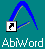
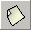
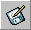
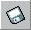
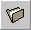

About AbiWord
About Open Source
Index
Contents
What's New
Check Version
Introduction
Installation
Getting Started
The Workspace
Entering Text
Formatting
Edit Commands
Paragraphs
Styles
Inserting Objects
Printing
Preferences
Shortcuts
abisource.com
FAQ
Credits
Search
|
|
Getting Started
* Opening AbiWord
* Creating a New Document
* Saving a Document
* Opening a Document
* Exiting AbiWord
Windows: You can open AbiWord in two ways:
- Double-click on the icon located on the Windows desktop.
- Click on the Start button on the Windows taskbar, go to the
Programs menu, go to the AbiWord group and
click on the AbiWord icon.

Linux: You can open AbiWord in two different ways:
- Click on the AbiWord icon in your menu or on your desktop.
- Type "abiword" into a X-terminal.
For each new document created, another AbiWord window opens with a new blank page.
AbiWord is a "single document interface" (SDI) as opposed to
"multiple document interfaces" (MDI) such as Microsoft Word
where all your documents are in the same Word window. For more about the difference
between these two concepts, see SDI Vs. MDI
There are four ways to create a new document:
- Go to the File menu and click on "New"
- Go to the Window menu and click on "New window"
- Click on the "Create a new document"

- Use the keyboard shortcut by pressing the "Ctrl" and "N"
keys simultaneously
Save As...
If your document has never been saved, choose a name and where
to store the file. Then do one of the following two actions:
- Go to the File menu and click on "Save as"
- Click on the "Save as..." icon
In both cases, a window appears. Select the location to place the document
(folder, hard disk or floppy) and type the name of the document in
the "Name" field, then click on the "Save" or
"OK" button. The filename
and path to the document appear in place of "Untitled1" in the
titlebar of AbiWord.

Save
There are three ways to save the document when you are finished or to
update the document with modifications:
- Go to the File menu and click on "Save"
- Click on the "Save the document" icon

- Use the keyboard shortcut by pressing the "Ctrl" and "S"
keys simultaneously
Note
- Saving is almost instantaneous and the previously saved document is irretrievably lost.
- If you update a document but want to keep previous versions, you have to use "Save
as..." and give the versions different names.
- On the Linux versions, before crashing, Abiword will automatically make a backup of the file.
To use the backup, simply restart Abiword and load the backup version.
Formats
AbiWord lets you save documents in several formats:
- *.abw : this is AbiWord's default format. It is an XML format
- *.zabw : abw format compressed to reduce the file size
- *.rtf : this is a standard "works anywhere" format (keeps text
formatting)
- *.txt : a plain text file with no formatting. (the file size is reduced)
- *.utf8 : this is a plain text format which
can encode many character sets in a multi-byte format
- *.html : the universal standard for Web pages
- *.latex : LaTeX format file
There are three ways to open a document:
- Go to the File menu and click on "Open"
- Click on the "Open an existing document" icon

- Use the keyboard shortcut by pressing the "Ctrl" and "O"
keys simultaneously
In each case, a window appears. Select the document to open and either double-click
on the name of the document to open or click on the "Save" or
"OK" button. Your document will then open.

Note
- The last four documents opened are listed under the file menu for easy access.
These documents are arranged in chronological order: the most recent in position one.
- AbiWord lets you open files originating from different sources:
*.abw, *.zabw, *.rtf, *.txt, *.utf8
*.doc : files written by Microsoft Word (all versions)
There are three ways to exit AbiWord:
- Go to the File menu and click on "Exit"
- Click on the button in the
titlebar
- Use the keyboard shortcut by pressing the "Alt" and "F4" keys simultaneously
Note
- If you try to exit AbiWord while a document is open but not saved, the
window below appears:

Click the Yes button to save the document, the No button to
exit without saving the document or the Cancel button to stay in AbiWord.
- If several documents are open at the same time, go to the File menu and click
on "Exit" while holding down the "SHIFT" key to close all the
windows at once. The window below appears to ask you if you want
to close all the windows.

- To minimize AbiWord, click on the button in the titlebar and reduce it to a button on the taskbar.
- To maximize the AbiWord window or restore it to normal size, click on the button
in the
titlebar. In Windows, double-clicking on the titlebar will have the same effect.
- In Unix, furl the AbiWord window, reducing it to its titlebar. In KDE, double-clicking
on the titlebar furls the window.
|